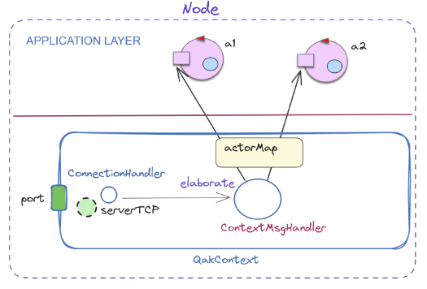

By Cesare Tomasi
By Cesare Tomasi
Goal: Costruire il simulatore di un sistema costituito da 3 lucciole.
Dall'analisi dei requisiti, emerge dal sistema la necessità di 3 entità distinte, cioè 3 lucciole. Esse verranno modellate come QActor firefly, data la loro natura allo stesso tempo reattiva ed attiva. Si ricorrererà anche ad un attore "di utilità" creator, per l'istanziazione agevole dei 3 attori firefly richiesti.
QActor creator context ctxfirefly{
State s0 initial{
delay 500
create firefly _"0"
create firefly _"1"
create firefly _"2"
}
}
QActor firefly context ctxfirefly {
State s0 initial{
/* inizializzazione stato lucciola (frequenza randomizzata) */
}
Goto flash
State flash{
/* cambio di stato acceso/spento -> comunicato all'attore griddisplay (descritto sotto)*/
}
Transition t0
whenTimeVar Freq -> flash /* flash ripete ogni Freq secondi */
whenEvent syncevent -> sync /* cambio di stato dopo l'arrivo dell'evento sync (descritto sotto)*/
State sync{
/* sincronizzazione frequenza lucciole */
}
Goto flash
}
In secondo luogo, il sistema si comporrà anche di un'entità orchestratrice (pure in questo caso in forma del QActor orchestrator), che si occuperà di tenere conto del passaggio del tempo e che comunicherà alle lucciole di sincronizzarsi (la frequenza comune sarà una variabile nascosta nel file .qak delle lucciole). Tale passaggio avverrà tramite l'emissione dell'evento syncevent.
QActor orchestrator context ctxfirefly {
State s0 initial {
/* inizializzazione stato orchestratore; inizio conteggio */
}
Transition t0
whenTimeVar Timer -> work /* stato varia quando il timer scade */
State work{
/* invio di evento syncevent alle firefly */
}
Transition t0
whenTimeVar Timer -> work /* il ciclo poi si ripete */
}
Infine, si ricorrererà ad un'entità che si occuperò della visualizzazione a schermo dello stato delle enità lucciole. Essa verrà modellato dal QActor griddisplay, dato come già realizzato.
Come primo passo, si definirà l'architettura del sistema fireflySynch. Avremo due contesti distinti: ctxfirefly (per le firefly e per l'orchestrator) e ctxgrid (per griddisplay).

Per semplicità, si supporrà che i diversi attori eseguano in un contesto locale (dunque sullo stesso computer), anche se chiaramente sarebbe possibile per il sistema funzionare nel distribuito.
Implementazioni degli attori in precedenza definiti:
By Cesare Tomasi